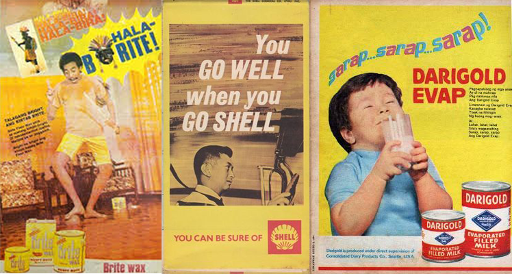
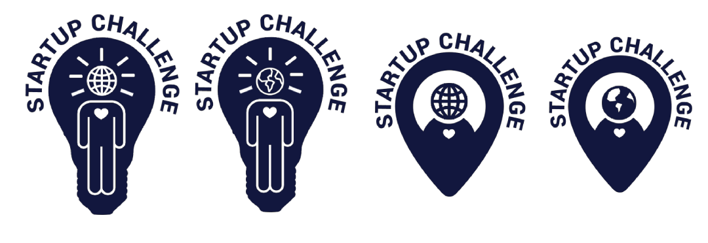
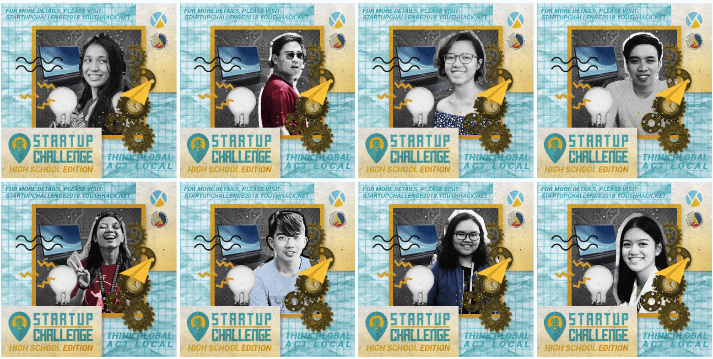
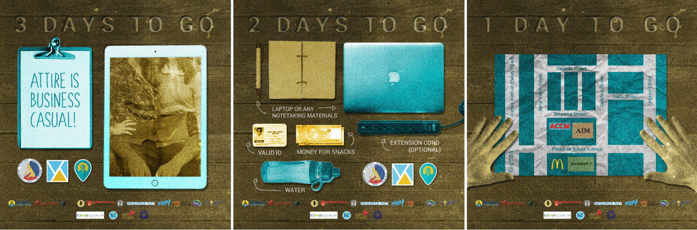
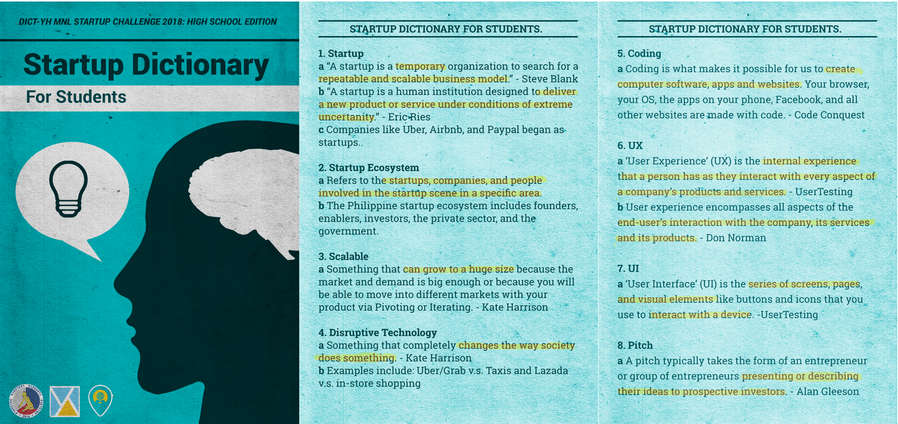
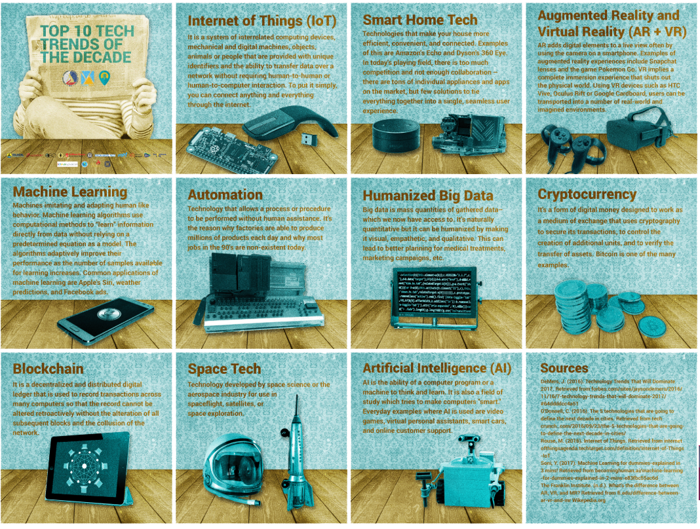

Startup Challenge 2018: High School Edition is an annual two-day event with the goal of bringing students into the exciting world of startups and technopreneurship. It is organized by Youthhack Manila, the NCR chapter of Youthhack, a nonprofit organization that helps students learn more about startups, technology and entrepreneurship. They partnered with the Department of Information and Communications Technology (DICT) to execute this event.
As the Marketing Core - Design member assigned to this event, I directed its visual identity and designed most of its collateral.
Example pubmats from previous Startup Challenges
Style pegs for Startup Challenge: High School Edition
This year, the theme of the event was “Think Global, Act Local”. In line with this, I wanted to create a look that was modern and technological, yet also lively and enticing (like Filipino hospitality). I believed that following the typical style of the organization’s pubmats wouldn’t be adequate to achieving this. Thus, I instead took inspiration from vintage Filipino advertisements.
The identity made use of Youthhack Manila’s existing brand guidelines (for the colors and typography), while adding new assets to achieve a refreshed look (see textures).
Based on the theme, the logo was designed to be a location pin with a person inside it. The person’s head is a globe icon (representing “think global”), with its body containing a heart. (representing “act local”).
Logo drafts
Teaser (left) and call for participants (right)
Facebook DP template
Countdown + reminder GIFs
Aside from the typical collateral for marketing an event, Startup Challenge also shared educational pubmats on startups and technopreneurship.
Startup Dictionary for Students pubmats
Top 10 Tech Trends of the Decade pubmats
After the event, all of the participants’ proposals were collated and visualized in a PDF titled “Idea Book”. This was then presented to representatives from DICT.
Youthhack Manila Executive Board members meeting with DICT representatives
2018 is Startup Challenge’s most successful year yet, compared to previous years. Key success metrics include:
Event Photos